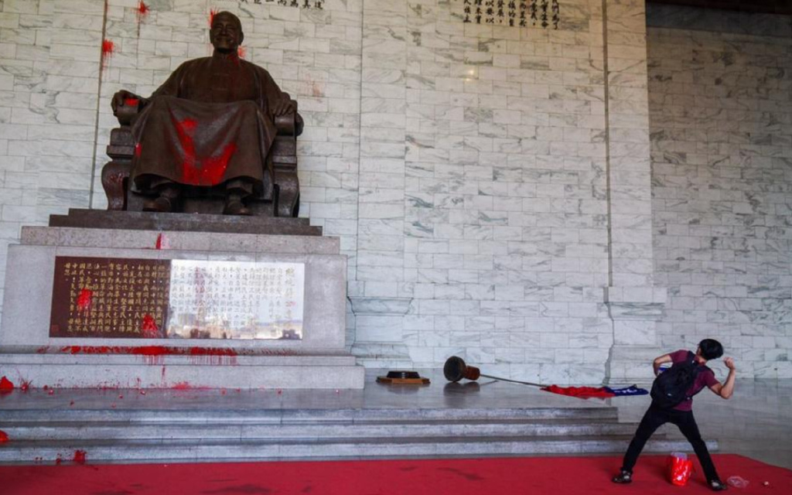
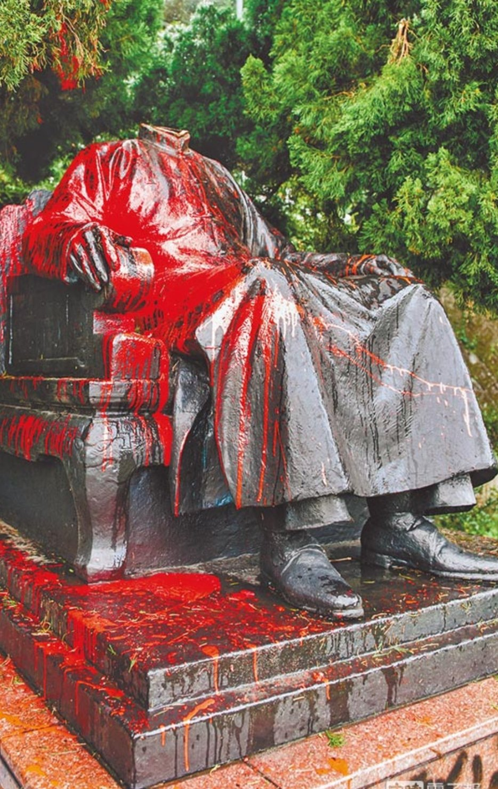
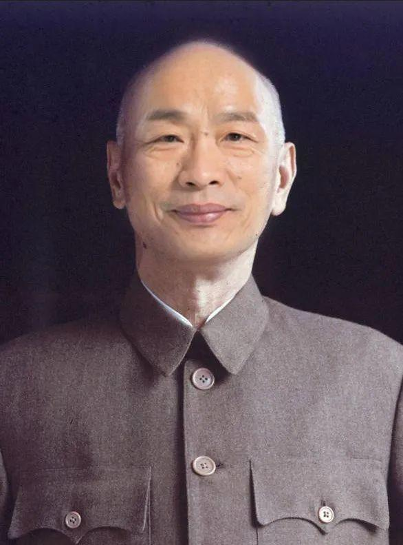

台湾青年任性投票，必将求锤得锤，求穷得穷？
连阳标统
2009年时，我写过一篇闲文说马英九将会是车轮党最后一任岛主，该党想干什么就赶紧动手，不然悔之晚矣……
理由很简单，即使以马英九之魅力，若与我竞选我们村的村长，无论怎么折腾，他肯定选我不赢。尽管我从小偷生产队橘子、板栗、在全村人用的水井里撒尿……那又如何，他还是会输。
所以，你看汉奸德即使搞出什么炉渣案，强拆案，八八枪，贿选案、光电案，赖皮寮，高端疫苗案……照样当选。
又如前几天曝光的色中饿鬼罗老师，若不是跟着又曝出其偷录与蔡英文聊天，光是他搞破鞋的丑闻，他绝不会落选（输2000票）。
你看，台湾人民宁可选垃圾，也不选择车轮党，很说明问题吧。
一
虽然车轮党遭遇屡被我不幸言中，但从不觉得欣喜，相反多年来明知无望，仍希望车轮党努力夺回政权。无他，其开党之初绰号“广东党”，有那么一点香火缘。
前天下午我瞌睡了一会，睡醒已半夜，打开电脑一看，汉奸德当选，虽不出意料，还是郁闷。看了侯市长落选感言，毫无新意。
唉，输了就输了。说什么鸟话，都不如号召全党同志从明天开始俯下身，脚踏实地服务台湾人民。除此，别无他途。
翻了几个历史群信息……爬楼看几百条信息，全与台湾选举相关，没一张黄图。XX的，太过分了。
嗯，多数人看见车轮党惨状，无不抱同情，大概意思是：妈的即使收拾国民党，也是我们来收拾，轮得到被民进汉奸党这样欺负？……等打过去那天，整死这帮汉奸王八蛋，全部抓去新疆摘棉花，替国民党出口鸟气。
 有如这十几年，民进党徒多次对委座塑像进行砍头、泼漆、淋墨等行为，搞得这边很多人大起护短义愤，即使没有伤害大陆人民的感情，也伤害了宁波老板的感情。我认识的几个宁波土豪就表示，到时候花钱找竹联帮买下这些屌毛的手脚……
我善意提醒，这些始作俑者，到时候一看风声不对，立即抱块木板游水过日本。
要知道委座再屌毛，也是我们大陆屌毛。他老人家再有不是，也是抗日领袖，民族忠良。砸他塑像不是不可以，得由我们亲自砸，啥时候轮到日本皇民，汉奸之后搞他，这是替日本人报仇？
二
车轮党与民进党每天互相掐，固然头疼。但遭逢中美联合政治夹杀，才是其每下愈况的致命原因。
大陆固然希望车轮党做内应，帮忙把台湾搞回来，却不欢迎其爬上岸发展，要发展也可以，嗯，必须是荣辱与共，肝胆相照那种。
一般人以为大陆希望台湾由车轮党当政，错。
其实大陆喜欢柯P当岛主。
为毛，节省安家费啊。车轮党七大姑八大姨的，亲友团庞大，一户发一个红包，大陆人民就要白干半年。而民众党人毛没几根，人均发一百万没问题，柯医生喊过价，两亿美元……这次过后，可能会掉价。
国民党陷于与大陆的历史渊源，几十年来反共不反中，对大陆人民亦称呼“大陆同胞”，就凭不反中这点，未来会被善待。至于“反共”嘛，自从建丰同志去世后就沦为口号，喊喊而已。双方力量太悬殊，这边也没人当回事。
近十余年来，随着中国国力进步，美国从政治遏制中国改变为全面反中。原本还没那么激进的民进党窥视到这点，为取得美国支持随之起舞，甘心充当美国反华前哨站。如此一来，民进党自然比国民党更好使唤。在美国支持下，民进党连续三次获得选举胜利，实属当然。
话说回来，美国固然支持民进党，但汉奸德想当台湾国父也是痴心妄想。
我不明白民进党是怎么想的，他们的和平独立梦想几乎是建立在大陆虚弱混乱，无力出兵的基础上。退一万步说，即使让台湾既成事实，侥幸独立，大陆十年不打你，二十年不打你，难道三十年，五十年也不打你？
三
这次车轮党败选，主要原因还是人选太弱。
下一届是谁？
目前看，有没有下届还真不好说。看上去这边已经不在乎台湾谁当选，按照自己计划逐步将美国推出第一岛链，这个战略目标一旦完成，台湾爱谁谁，无所谓。
如果还有下届，可能人选是卢市长。
台湾蓝媒昨天晚上就开始讨论卢秀燕，大概率担心车轮党老人们一口气撑不过来，就此OVER，赶紧给他们灌一口鸡汤，续四年命。只是四年时间太长，变数太多。谁知道明天会发生什么事情。
从郭秃子这两年转变立场大约可以看出端倪，郭秃子足智多谋，号称台湾卧龙，这两年开始摇身一变，其姿之奇，其势之急，令人相当愕然。嗯，他嗅到了危险。
目前郭秃子几乎包揽把持中天所有政论节目，成为十大亲共名嘴之三。虽是第三，其实风头直压前政战上校赖岳谦。
郭秃子分析说大陆贸易壁垒调查，这个月就会公布惩罚名单，给汉奸德一个下马威。未来大陆会继续执行穷台政策，台湾这下惨了……老流氓吴子嘉也说台湾青年太任性，跟着柯P跑，必将求锤得锤，求穷得穷。
论调不能说不对，但不是绝对。1950—1990年，台海双方隔绝往来贸易几十年，也没见台湾有多穷，反而成为亚洲四小龙。
这次国民党年轻人中，让人眼前一亮的是前马办发言人徐巧芯。
这小姑娘表现出政治奇才的苗子，不过最好能抽几年离开台湾去欧美历练一番，假以时日，前途不可限量。
早几年扎个小辫子，还是学生妹模样。现在短发，看上去干练了很多。
不出意外的话，下个月初秃鹰会当选台湾省人大主任。他若没雄心再飞一次，就争取做好做稳。四年后再当一届，有两届人大主任，人生止步于此大可满意，也能让他的支持者欣慰。
若还想回锅，这四年得好好谋划，先接管王前院长地方派系势力，成为车轮党一霸，再利用权力收服党内。我看他这次并不与候同台，只管埋头帮党内立委辅选，不无此意。现在车轮党里的中坚力量，有谁不欠他人情？四年前反对他的罗智强、徐巧芯，现在都贴着他。